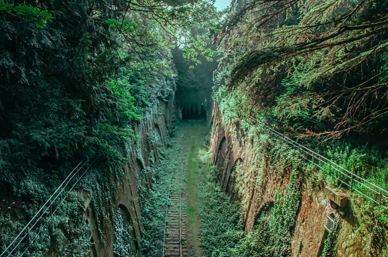
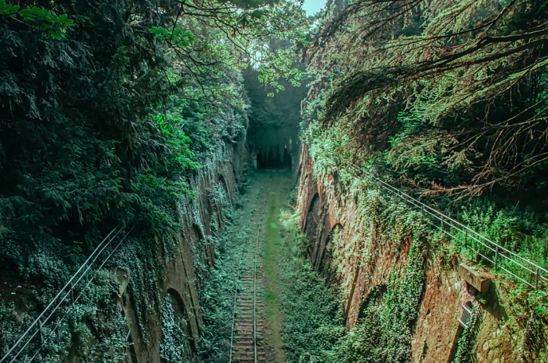
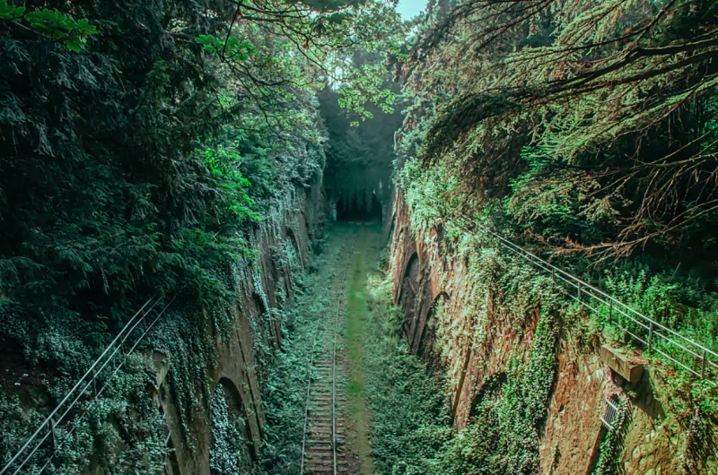

Sa création
Le projet de petite ceinture naît durant la deuxième moitié du XIXe siècle alors que le réseau de chemin de fer est en plein développement.

 

La ligne de Petite Ceinture de Paris, communément désignée sous le nom de « Petite Ceinture », est une ligne de chemin de fer à double voie de 32 kilomètres de longueur encerclant Paris à l'intérieur des boulevards des Maréchaux. Bien que faisant toujours partie du réseau ferré national, elle est aujourd'hui inutilisée sur la majeure partie de son parcours.
Le projet de petite ceinture naît durant la deuxième moitié du XIXe siècle alors que le réseau de chemin de fer est en plein développement.
